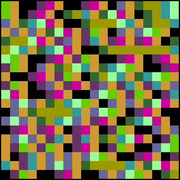

To illustrate sensitivity to initial conditions, here are Kelly plots for s = 3.99 logistic maps, with initial value x = 0.5000 through x = 0.5020, in steps of 0.0001.
Note the first few colors remain unchanged, because the change in initial value is not large enough to alter the bins of the first few iterates.
Do you see some structures that appear to persist from one picture to the next?
|  |
| Click the picture to start the animation. |